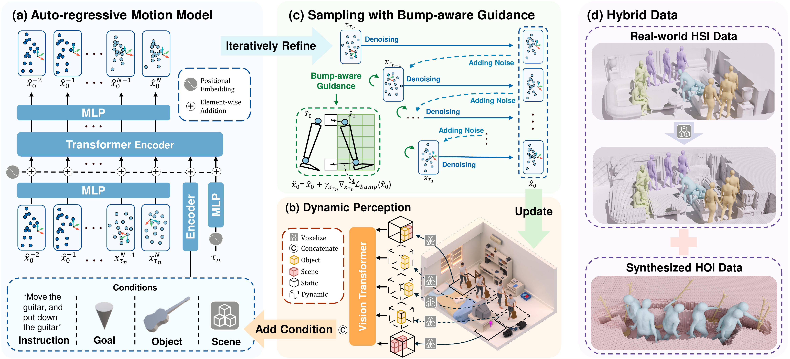

Human-object-scene interactions (HOSI) generation has broad applications in embodied AI, simulation, and animation. Unlike human-object interaction (HOI) and human-scene interaction (HSI), HOSI generation requires reasoning over dynamic object-scene changes, yet suffers from limited annotated data. To address these issues, we propose a coarse-to-fine instruction-conditioned interaction generation framework that is explicitly aligned with the iterative denoising process of a consistency model. In particular, we adopt a dynamic perception strategy that leverages trajectories from the preceding refinement to update scene context and condition subsequent refinement at each denoising step of consistency model, yielding consistent interactions. To further reduce physical artifacts, we introduce a bump-aware guidance that mitigates collisions and penetrations during sampling without requiring fine-grained scene geometry, enabling real-time generation. To overcome data scarcity, we design a hybrid training startegy that synthesizes pseudo-HOSI samples by injecting voxelized scene occupancy into HOI datasets and jointly trains with high-fidelity HSI data, allowing interaction learning while preserving realistic scene awareness. Extensive experiments demonstrate that our method achieves state-of-the-art performance in both HOSI and HOI generation, and strong generalization to unseen scenes.
Lift the plastic box, move the plastic box, and put down the plastic box
(Trained on synthesized OMOMO dataset)
Drag the suitcase, and set the suitcase down
(Trained on synthesized OMOMO dataset)
Move the chair, put down the chair, and sit on it
(Trained on hybrid dataset)
HOSI generation requires reasoning about the complex interplay among the human, the manipulated object, and the surrounding scene, introducing several challenges:
(i) Dynamic Object-Scene Changes : The scene context evolves continuously with human navigation, while the manipulation of sizable objects further reshapes the scene layout. These dynamic changes complicate the generation of consistent interactions among humans, objects, and scenes elements.
(ii) Annotated Data Scarcity : Capturing high-quality, diverse human-object-scene motion data is challenging due to the combinatorial explosion of object types, scene configurations, and task instructions, which requires substantial human and computational resources. The resulting lack of diverse datasets with comprehensive scene annotations hinders the development of generalizable generative models.
To address these challenges, we propose InfBaGel, an autoregressive framework that generates HOSI from high-level instructions such as goal locations and textual commands. Our approach adopts a coarse-to-fine generation scheme with a consistency model that performs few-step iterative refinement during denoising, conditioned on dynamic perceptual representations of the environment, achieving substantially faster inference than diffusion-based baselines.
Furthermore, we employ a hybrid data training strategy that eliminates the need for annotated HOSI data, enabling the model to learn diverse, complex, and coherent interactions. Although trained for HOSI, the model generalizes naturally to various HSI tasks, like locomotion and static-object interactions.
The InfBaGel (generating interaction from bump-aware guidance in real-time) is characterized by:

@inproceedings{
zou2025infbagel,
title={InfBaGel: Human-Object-Scene Interaction Generation with Dynamic Perception and Iterative Refinement},
author={Yude Zou and Junji Gong and Xing Gao and Zixuan Li and Tianxing Chen and Guanjie Zheng},
booktitle={The Fourteenth International Conference on Learning Representations},
year={2026},
url={https://openreview.net/forum?id=TeyHNq4WlI}
}